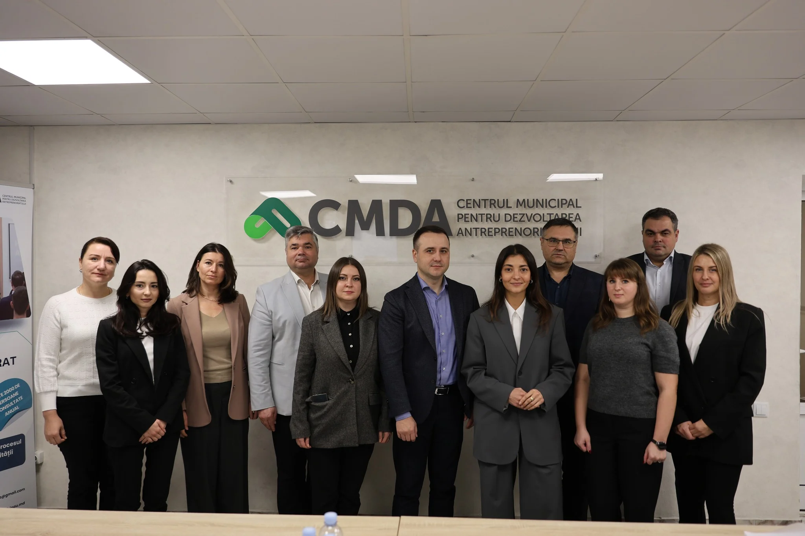

Misiune

Misiunea CMDA este de a dezvolta și implementa programe și instrumente de suport pentru sectorul întreprinderilor mici și mijlocii din municipiul Chișinău, în scopul creșterii performanței și competitivității acestuia, contribuind la dezvoltarea socio-economică durabilă a municipiului și la crearea de noi locuri de muncă.